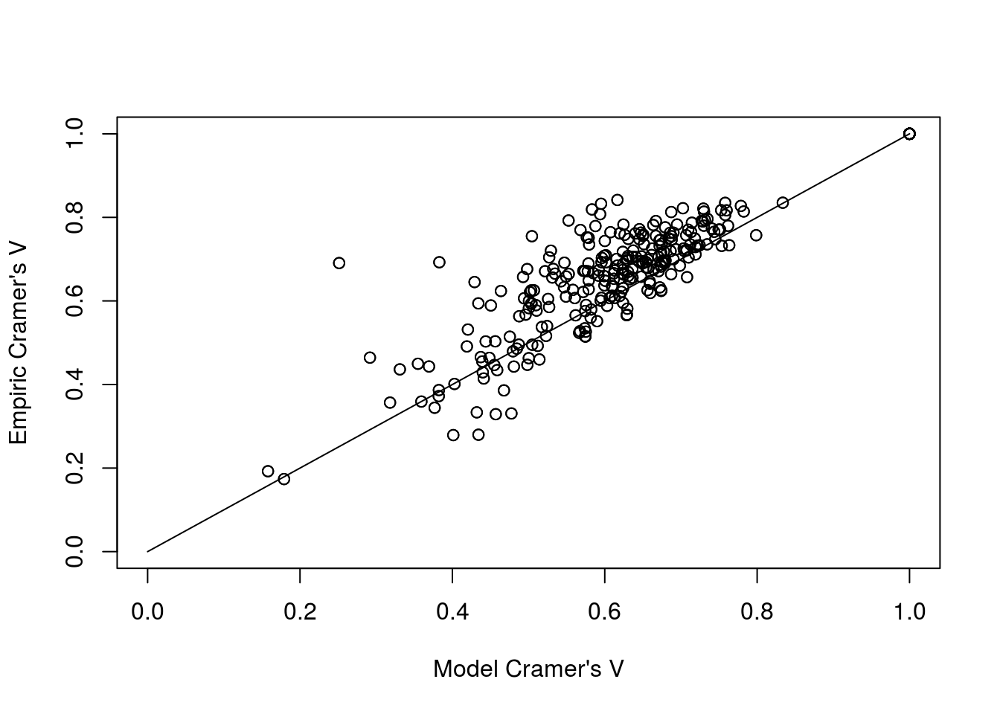
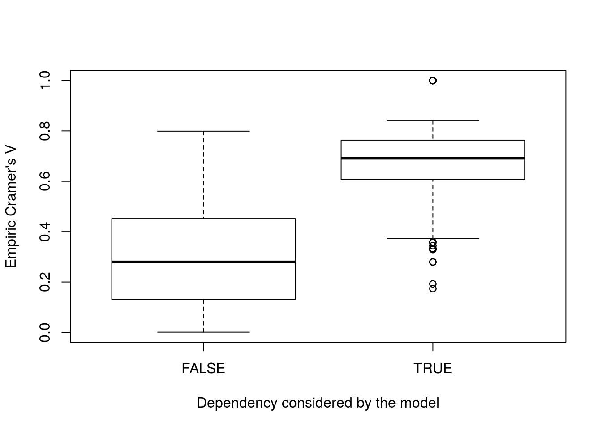
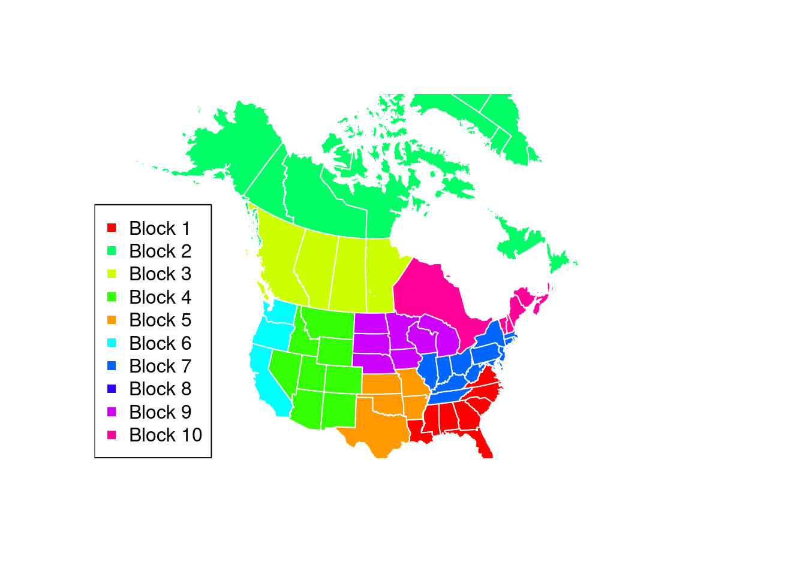
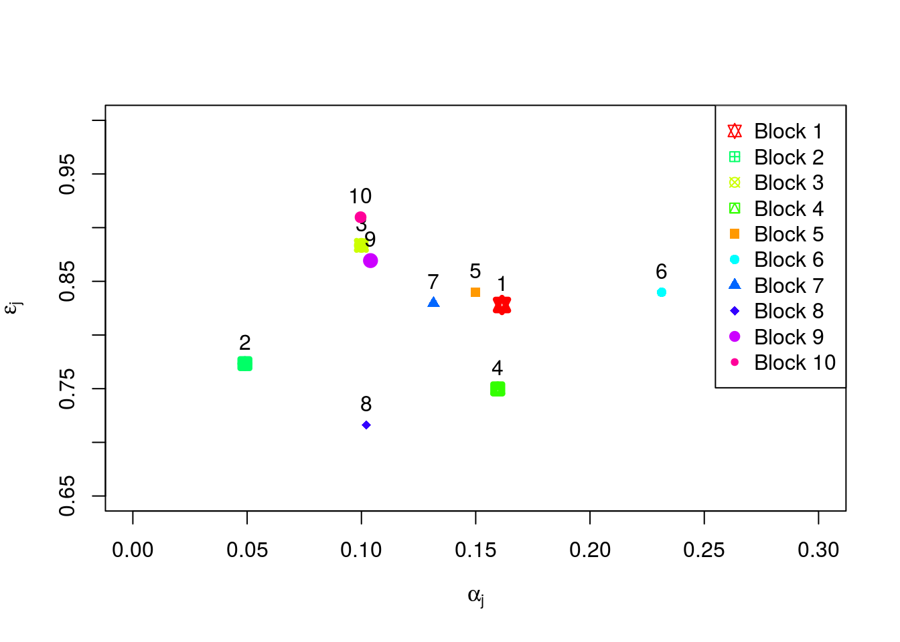

Modelling binary variables with blocks of specific one factor distribution.
Description:
All the experiments are used with MvBinary 1.0
MvBinary models large binary data with new family of one factor distributions per independent blocks. The model provides an explicit probability of each events, thus avoiding the numeric approximations often made by the existing methods. Its interpretation is easy since each variable is described by two continuous parameters (marginal probability and strength of dependency) and by one binary parameter (kind of the dependency). Parameter estimation is performed by the inference margin procedure where the second step is achieved by an expectation-maximization algorithm. Model selection is carrying out by a deterministic approach which strongly reduces the number of competing models. This approach uses a hierarchical ascendant classification of the variables based on the empiric Cramer’s V for selecting a narrow subset of models. More technical details here
This section performs the modelling of the Plants data set. It uses all the functions implemented in the package MvBinary and can be used as a tutorial. Data has been extracted from the USA plants database, July 29, 2015. It describes \(35 583\) plants by indicating if they occur in 69 states (USA, Canada, Puerto Rico, Virgin Islands, Greenland and St Pierre and Miquelon). The model selection is achieved by the deterministic algorithm where the Ward criterion is used for the HAC. The EM algorithm is randomly initialized 40 times and it is stopped when two successive iterations increase the log-likelihood less than 0.01.
Loadings
rm(list=ls())
# Data and Package loadings
require(MvBinary)Loading required package: MvBinarydata("plants")Model selection and parameter inference
# Model selection and Parameter estimation (10 minutes) on 4 CPU cores
results <- MvBinaryEstim(plants, nbcores = 8)
# Summary of the resulting model
summary(results)****************************************************************************************
The model contains 10 blocks
Its log-likelihood is -520704.9
Its BIC criterion value is -521428
The model requires 138 parameters
****************************************************************************************
The blocks are defined as follows
Block 1 contains the following 8 variables:
Alabama Florida Georgia Louisiana Mississippi North Carolina South Carolina Virginia
Block 2 contains the following 8 variables:
Alaska Greenland Labrador Newfoundland Northwest Territories Nunavut StPierreandMiquelon Yukon
Block 3 contains the following 4 variables:
Alberta British Columbia Manitoba Saskatchewan
Block 4 contains the following 8 variables:
Arizona Colorado Idaho Montana Nevada New Mexico Utah Wyoming
Block 5 contains the following 5 variables:
Arkansas Kansas Missouri Oklahoma Texas
Block 6 contains the following 3 variables:
California Oregon Washington
Block 7 contains the following 15 variables:
Connecticut Delaware District of Columbia Illinois Indiana Kentucky Maryland Massachusetts New Jersey New York Ohio Pennsylvania Rhode Island Tennessee West Virginia
Block 8 contains the following 3 variables:
Hawaii PuertoRico VirginIslands
Block 9 contains the following 7 variables:
Iowa Michigan Minnesota Nebraska North Dakota South Dakota Wisconsin
Block 10 contains the following 8 variables:
Maine New Brunswick New Hampshire Nova Scotia Ontario Prince Edward Island Quebec Vermont
****************************************************************************************Relevance of the modelled dependencies We show the relevance of the dependencies detected by the estimated model. Indeed, the first figure shows the correspondence between the Cramer’s V computed with the model parameter and the empiric Cramer’s V, for each pair of dependent variables according to the estimated model. Moreover, the second figure shows that the estimated model well consider the main dependencies.
# Computation of the Empiric Cramer's V
Vempiric <- ComputeEmpiricCramer(plants)
# Computation of the model Cramer's V
Vmodel <- ComputeMvBinaryCramer(results)
# Matrix containing both Cramer's V
Vmatrix <- data.frame(State1=rep(colnames(plants), times = ncol(plants)), State2=rep(colnames(plants), each = ncol(plants)), Vempiric=as.numeric(Vempiric), Vmodel=as.numeric(Vmodel))
# Comparison of the Cramer's V
plot(Vmatrix$Vmodel[which(Vmatrix$Vmodel!=0)], Vmatrix$Vempiric[which(Vmatrix$Vmodel!=0)],
xlim=c(0,1), ylim=c(0,1),
xlab="Model Cramer's V",
ylab="Empiric Cramer's V")
lines(c(0,1),c(0,1))
boxplot(Vmatrix$Vempiric~as.factor(Vmatrix$Vmodel!=0), xlab="Dependency considered by the model", ylab="Empiric Cramer's V")
Geographic coherence of the blocks The estimated model is composed by 10 blocks of dependent variable. This figure shows that this block repartition has a geographic meaning.
library(maps)
library(mapproj)
library(mapdata)
library(raster)
library(sp)
library(rgdal)rgdal: version: 1.2-7, (SVN revision 660)
Geospatial Data Abstraction Library extensions to R successfully loaded
Loaded GDAL runtime: GDAL 1.10.1, released 2013/08/26
Path to GDAL shared files: /usr/share/gdal/1.10
Loaded PROJ.4 runtime: Rel. 4.8.0, 6 March 2012, [PJ_VERSION: 480]
Path to PROJ.4 shared files: (autodetected)
Linking to sp version: 1.2-4 library(rgeos)rgeos version: 0.3-23, (SVN revision 546)
GEOS runtime version: 3.4.2-CAPI-1.8.2 r3921
Linking to sp version: 1.2-4
Polygon checking: TRUE library(maptools)
## Specify a geographic extent for the map
## by defining the top-left and bottom-right geographic coordinates
mapExtent <- rbind(c(-160, 70), c(-63, 25))
## Specify the required projection using a proj4 string
## Use http://www.spatialreference.org/ to find the required string
## Polyconic for North America
newProj <- CRS("+proj=poly +lat_0=0 +lon_0=-100 +x_0=0 +y_0=0 +ellps=WGS84 +datum=WGS84 +units=m +no_defs")
## Project other layers
can1Pr <- spTransform(getData('GADM', country="CAN", level=1), newProj)
us1Pr <- spTransform(getData('GADM', country="USA", level=1), newProj)
## Plot each projected layer, beginning with the projected extent
plot(spTransform(SpatialPoints(mapExtent, proj4string=CRS("+proj=longlat")), newProj), pch=NA)
require(graphics)
colo <- rainbow(max(results@blocks))
colo[c(2,5)] <- colo[c(5,2)]
palette(colo)
for (k in 1:max(results@blocks)){
theseJurisdictions <- names(results@blocks)[which(results@blocks==k)]
if (any(can1Pr$NAME_1 %in% theseJurisdictions))
plot(can1Pr[can1Pr$NAME_1 %in% theseJurisdictions, ], border="white", col=k, add=TRUE)
if (any(us1Pr$NAME_1 %in% theseJurisdictions))
plot(us1Pr[us1Pr$NAME_1 %in% theseJurisdictions, ], border="white", col=k, add=TRUE)
}
legend("bottomleft", legend=paste("Block", 1:max(results@blocks)), col=colo, lty=0, pch=15)
plot(can1Pr[can1Pr$NAME_1 %in% can1Pr$NAME_1[5], ], border="white",
col=results@blocks[which(names(results@blocks)=="Labrador")], add=TRUE)
plot(spTransform(getData('GADM', country="GRL", level=1), newProj), border="white",
col=results@blocks[which(names(results@blocks)=="Greenland")], add=TRUE)
plot(spTransform(getData('GADM', country="VIR", level=1), newProj), border="white",
col=results@blocks[which(names(results@blocks)=="VirginIslands")], add=TRUE)
plot(spTransform(getData('GADM', country="SPM", level=1), newProj), border="white",
col=results@blocks[which(names(results@blocks)=="StPierreandMiquelon")], add=TRUE)
Model interpretation Parameters permit an easy interpretation of the whole distribution. The mean per block of the values of \(\alpha_j\) and \(\varepsilon_j\) are summarized by the following figure. Note that the model only detects positive dependencies since for \(j=1,\ldots,d\), \(\delta_j=1\).
Each block is composed with highly dependent variables (high values of parameters \(\varepsilon_j\) and \(\delta_j=1\)). Therefore, the knowledge of one variables into a block provides a strong information inherent to the other variables affiliated into this block. For instance, the most dependent block is Block 10 (composed by Prince Edward Island, Nova Scotia, New Brunswick, New Hampshire, Vermont, Maine, Qu'ebec and Ontario). Thus, a plant occurs in Ontario with probability \(\alpha_{Ontario}=0.14\) while it occurs with a probability \(0.83\) if this plant occurs in Qu'ebec. The less dependent block is composed with tropical states (Virgin Islands, Puerto Rico and Hawaii). These weaker dependencies can be explain by a large geographic remoteness. Finally, parameters \(\alpha_j\) allow to described the region by their amount of plants. Cold regions (Blocks 2, 3 and 10) obtains small values of \(\alpha_j\) while the “sun-belt” obtains large values of this parameter.
# A summary of the block parameters
plot(NA, xlab=expression(alpha[j]), ylab=expression(epsilon[j]), xlim=c(0,0.3), ylim=c(0.65,1))
for (b in 1:max(results@blocks)){
points(mean(results@alpha[which(results@blocks==b)]), mean(results@epsilon[which(results@blocks==b)]), col=b, pch=b+10, lwd=4)
text(mean(results@alpha[which(results@blocks==b)]), mean(results@epsilon[which(results@blocks==b)])+0.02, b, pch=b+14)
}
legend("topright", legend=paste("Block", 1:max(results@blocks)), col=colo, lty=0, pch=10+1:max(results@blocks)) 